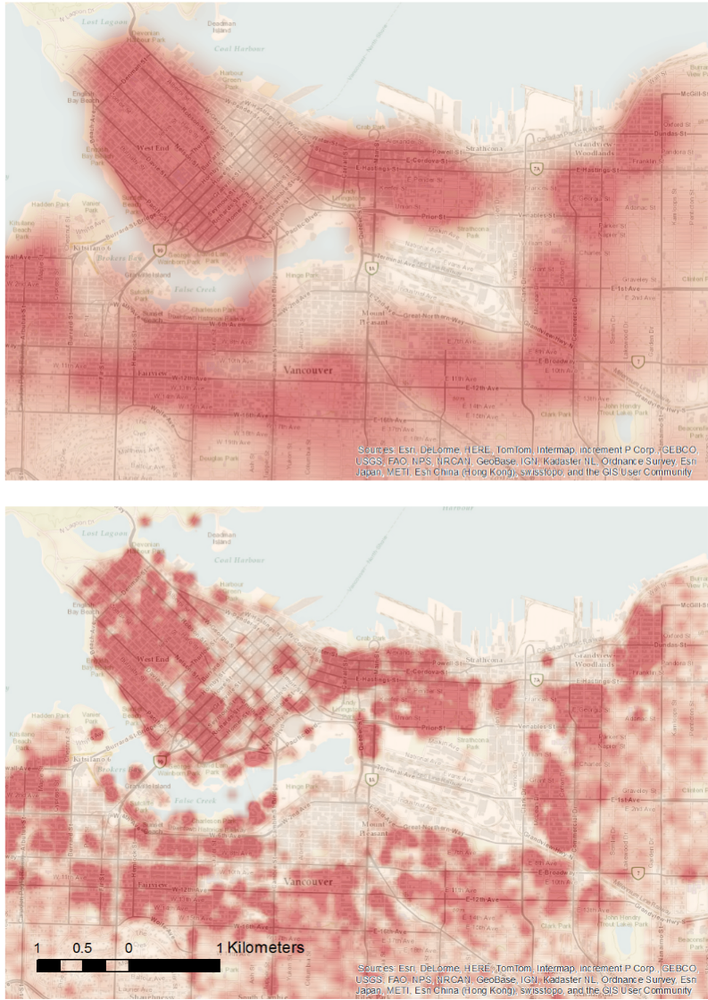
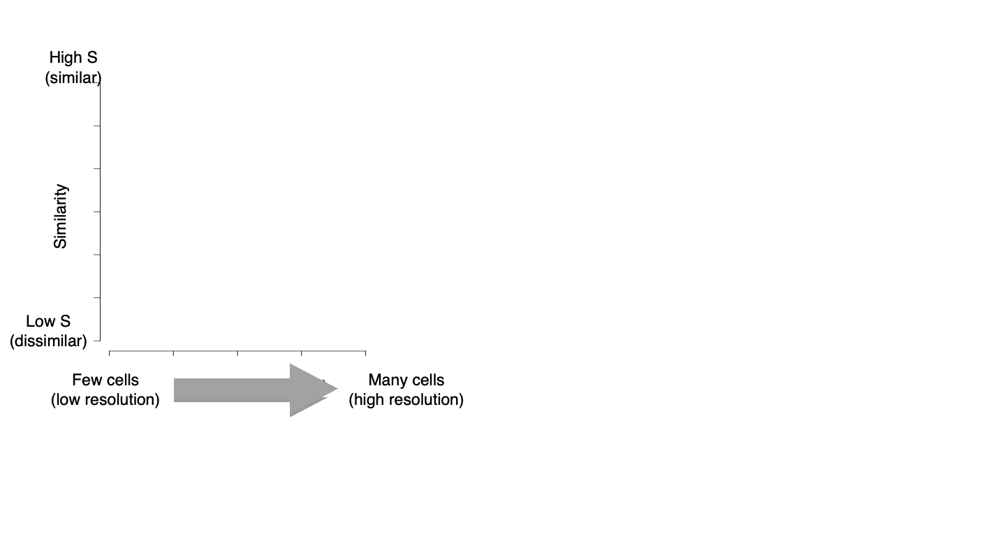
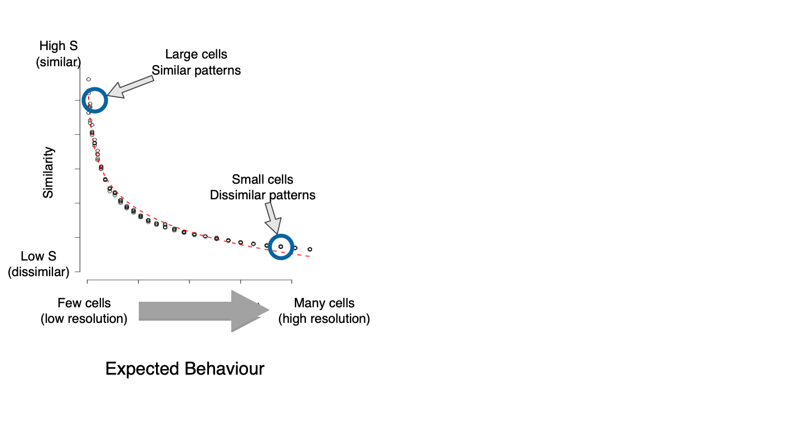
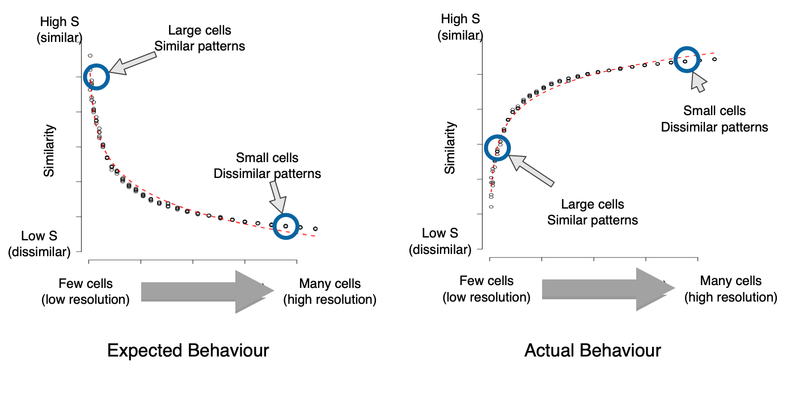
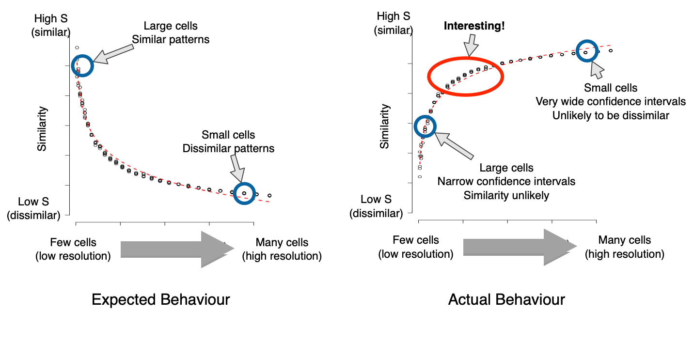

GIS Research UK 2019
Identifying the appropriate spatial resolution for the analysis of crime patterns
Nick Malleson*, Wouter Steenbeek and Martin Andresen
*School of Geography, University of Leeds, UK
nickmalleson.co.uk
These slides: www.nickmalleson.co.uk/presentations.html
Overview
XXXX
'Appropriate' Spatial Scale
What is the appropriate spatial scale for the analysis of spatial patterns?
Addresses, streets, neighbourhoods, regions, etc..
Could be a theoretical choice
E.g. we know individual houses are important
Or determined empirically
E.g. we only have data at the neighbourhood level
'Appropriate' Spatial Scale
But in some cases, there might be a need to find an 'appropriate' scale
In general: smaller is better
(events and population are more likely to be homogeneous)
But: how small is too small
High-resolution data are hard / expensive to obtain (might be personally disclosive / commercially sensitive
Small number problems / signal v.s. noise
What is the point at which no further disaggregation provides new information?
Definition of the most appropriate scale:
that which is as large as possible without causing the underlying spatial units to become heterogeneous with respect to the phenomena under study.
Methods
Combines and adapts two existing methods:
Multiple-resolution goodness of fit procedure (Costanza, 1989)
Test for spatial (dis)similarity (Andresen’s S: Andresen, 2009; Wheeler et al.,2018).
- Choose two similar crime datasets
- Place a regular grid over the two data sets
- Count the number of points in each cell from each data set
- Remove cells with insufficiently low expected frequency
- Calculate similarity using Andresen's Global S index
- Repeat (2) using a smaller grid N times (until similarity is fairly constant)
- Graph the similarity at different resolutions
Either split one data set into two, or choose two different years (e.g. burglary 2015, burglary 2016)
Need to be structurally similar; differences due to randomness
Similarity at different resolutions
Quiz
Similarity at different resolutions
What I expected
Similarity at different resolutions
WTF?
Similarity at different resolutions
Explanation
For more information about what we're doing at Leeds
Data Assimilation for Agent-Based Models (dust)
Main aim: create new methods for dynamically assimilating data into agent-based models.
Uncertainty in agent-based models for smart city forecasts
Developing methods that can be used to better understand uncertainty in individual-level models of cities
Bringing the Social City to the Smart City
https://alisonheppenstall.co.uk/research/bringing-the-social-city-to-the-smart-city/

References
Please see the GISRUK abstract at:
Summary
XXXX